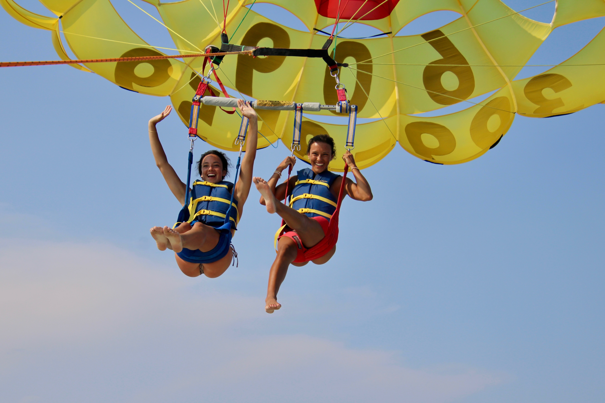
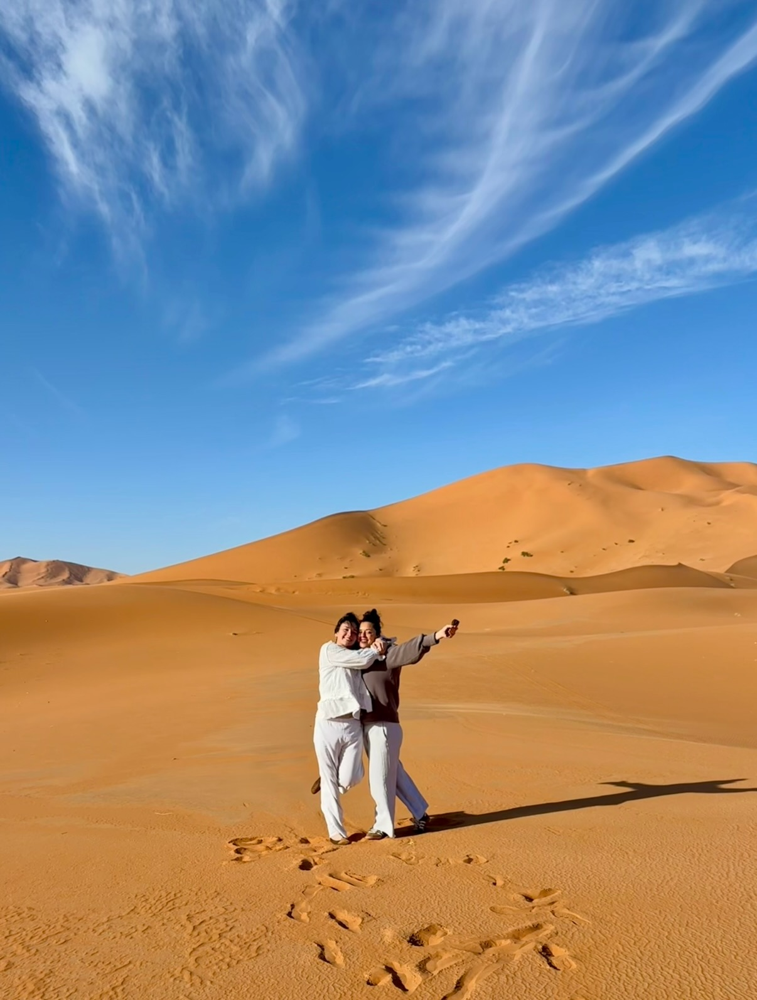
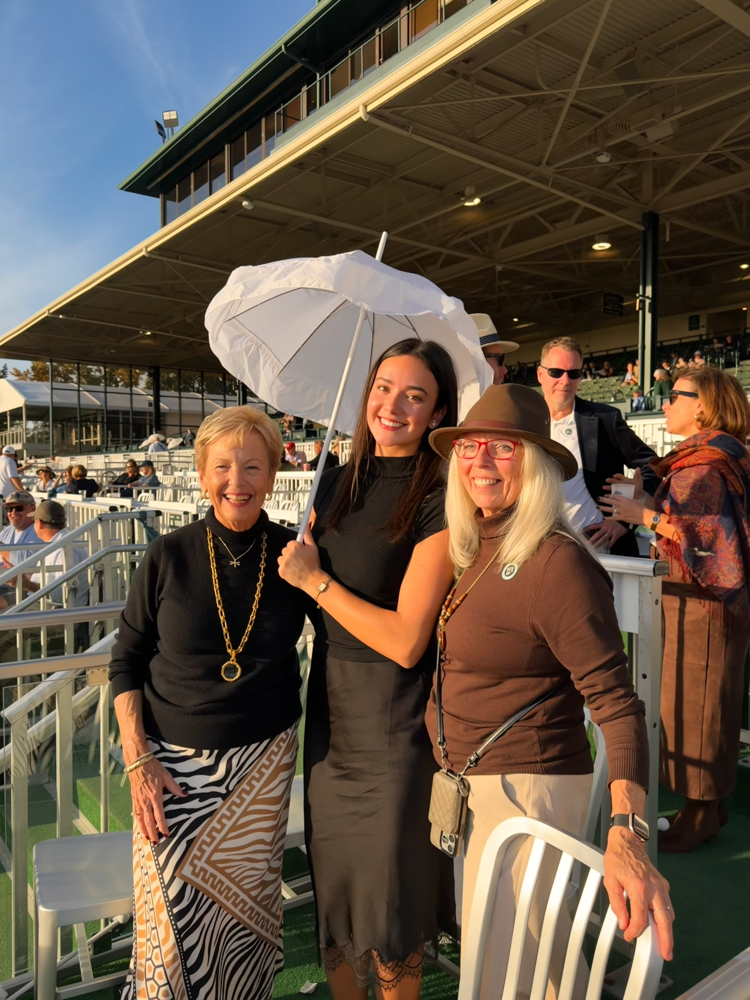
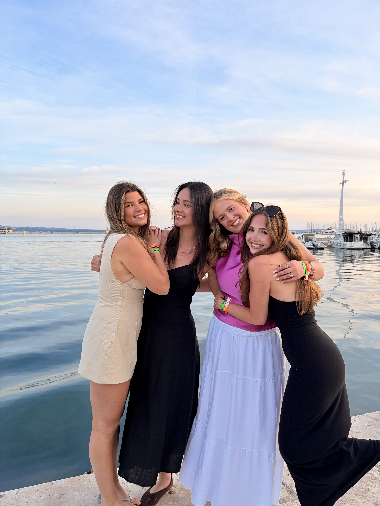
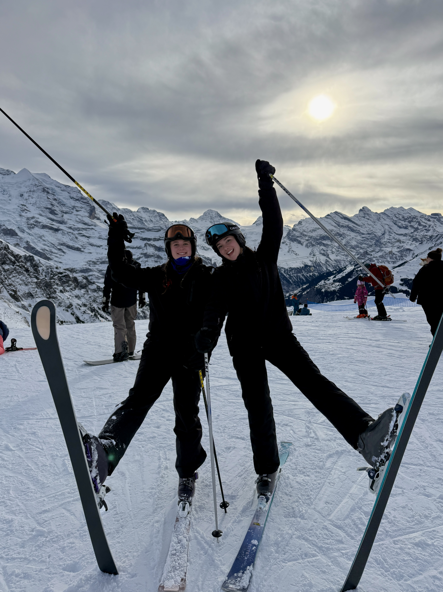
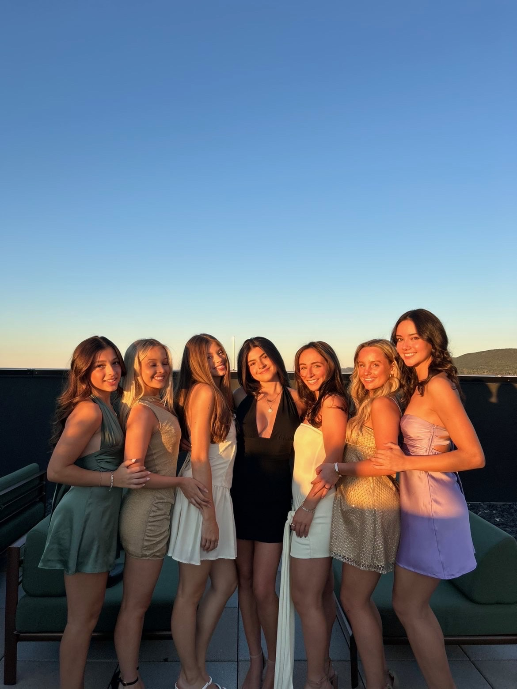

Sara has a little sister named Sienna, and the two of them are very close. Sara and Sienna get along very well for siblings. They hope to be next door neighbors one day.

Sara has a little sister named Sienna, and the two of them are very close. Sara and Sienna get along very well for siblings. They hope to be next door neighbors one day.

Sara and her mom both love to travel. They've recently taken many trips, both together and separately, and love sharing stories about where they've been and where they'll go next.

Sara and her grandmothers are three peas in a pod. Lita, her mom's mother, is creative and artistic. She has a relaxed, sometimes Type B personality. Mimi, her dad's mother, is girly and social. They couldn't be more different, but they get along great, and Sara loves spending time with both of them.

Sara studied abroad during the spring of 2026 and loved every bit of it. Pictured are just a few of the friends she met along the way. She still keeps in close contact with them and hopes to plan a reunion trip soon.

Sara loves to ski and has recently made it a goal to get on the slopes at least once a year. For her, skiing is less about mastering tricks and more about the atmosphere of the mountains and enjoying the experience. (One trip in the emergency snowmobile was enough.)

During her time at Penn State, Sara was a member of the Pi Beta Phi sorority. She loved being affiliated with a group of supportive girls and will never forget the experience.